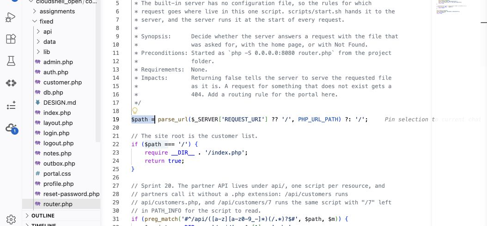

One assignment: Read → Fix → Prove → Report
Submit one short worksheet and your changed fixed/router.php for this activity. The runbook review is optional practice, not a second assignment. The module quiz remains separate.
What you will do
The problem: a visitor who has not signed in can download sensitive files directly. Requesting /data/seed.sql or /data/portal.sqlite returns the file, including the portal's fictional customer and staff-account data. The visitor never needs to open a PHP page, so the sign-in checks on those pages do not protect the files.
Ticket PORTAL-118 asks you to investigate this direct-access flaw. Reproduce it on the original site, change fixed/router.php to refuse /data/ requests, and prove that the requests are blocked while signed-in customer use still works. Plan about 60–75 minutes.
Design lesson — OWASP A06 Insecure Design: sensitive data files were placed inside the directory the web server serves. Your deny rule is a mitigation for that design decision; it blocks the assigned URLs but leaves the files in that directory. Moving sensitive storage outside the served directory would address the file-placement flaw. This lab asks you to apply and explain the mitigation.
This early report is a short worksheet: three claim rows, one flow, one threat, and a before/after table. Brief answers are enough. The full threat-modeling method remains in the lecture for practice; an exhaustive audit, diagram, STRIDE register, and ranked backlog are not required for this submission.
Step 1: Open both portals
- Launch Google Cloud Shell with the Google account used for setup. Open your existing course folder containing
site,fixed,reports, andscripts. - Select Open Editor if needed. Right-click the course folder and choose Open in Integrated Terminal.
- Run this command and press Enter:
bash scripts/start.sh- Wait for both startup messages. Open Web Preview → Preview on port 8080 for site, then Web Preview → Change port → 8081 for fixed.
- Sign in separately with fictional username
rmarshand passwordpassword. Check the port before each test. Leavesite/unchanged and keep earlier repairs infixed/.
Use the Cloud Shell Guide for first setup or startup problems. Test only your own copies under the course Rules Of Engagement.
Step 2: Start the supplied report
- In the editor, open
assignments/early-reports/m02-design-audit-starter.md. - Copy it into the workspace-level
reports/folder and name the copym02-design-audit.md. From the workspace-root terminal you can use:
cp assignments/early-reports/m02-design-audit-starter.md reports/m02-design-audit.md- Fill in your name and disclosure. Complete its prompts as you work. You can also download the report starter from this page.
Step 3: Download the files without signing in
These terminal requests do not send a portal login cookie. They show what someone can download without signing in, even if your browser tab is signed in.
- In the file list on the left, click the arrow beside site, then click DESIGN.md. Read the Authorization and Deployment sections. They claim visitors cannot reach application data and supporting files are not served.
- Click inside the terminal at the bottom of Cloud Shell. Paste this command and press Enter:
curl -sS -i http://127.0.0.1:8080/data/seed.sql- Look for
HTTP/1.1 200 OKnear the top, followed by SQL text. 200 means the server sent the file. Copy that status line and two or three lines of SQL into the report's evidence block. - Now paste this command and press Enter. It saves the database to a file rather than filling the terminal with unreadable binary data:
curl -sS -D reports/m02-before-headers.txt -o reports/m02-before.sqlite http://127.0.0.1:8080/data/portal.sqlite- Paste this command and press Enter to display the response information:
cat reports/m02-before-headers.txt- Find its status line. It should also say
200 OK. Copy the actual line into your report. - Paste this command and press Enter to identify the downloaded file:
file reports/m02-before.sqlite- The output should identify a SQLite database. Copy that output into your report. You have now downloaded both files without signing in. Keep the downloaded database in Cloud Shell; do not submit it.
- In your report's first two claim rows, mark each claim supported or contradicted by these results. Add the status or file-identification evidence beside your answer.
- Open the original portal's 8080 browser tab. Sign in as
rmarshif needed. Click Customers, then click one customer's account link. In the third claim row, record whether those pages opened. - In the editor, open
site/router.php. Press Ctrl+F (Cmd+F on a Mac), search forfile_exists, and read the block containingreturn false. That branch lets the server send an existing file directly. In the worksheet, explain in one sentence why a sign-in check on a different PHP page did not stop the downloads.
Fill in the three short design prompts
- In the worksheet's Flow line, put
/data/seed.sqlon the request arrow and the downloaded SQL on the return arrow. Name the browser-to-server boundary: the request came from outside the server. No drawing is required. - In Threat and STRIDE category, write one sentence saying who could download what data. Compare that threat with the six STRIDE categories in lecture section 5, choose one, and state why it fits.
- In Requirement, finish “The portal must…” with a rule describing who must be refused access to these files and what response should show the refusal. You will test that rule next.
Step 4: Add the blocking rule to fixed
- In the editor's file list, expand fixed, then click router.php. Check the editor tab's path: it must be
fixed/router.php, notsite/router.php. - Press Ctrl+F (Cmd+F on a Mac). Search for
$path =. Close the Find box. You should see this existing line:
$path = parse_url($_SERVER['REQUEST_URI'] ?? '/', PHP_URL_PATH) ?: '/';- Click at the end of that line and press Enter. Paste the following code on the new line, before the existing
// The site rootcomment. Do not add another<?phptag.
// Block direct requests for the data folder.
if (str_starts_with($path, '/data/')) {
http_response_code(403);
exit("Forbidden\n");
}- Read the three actions:
str_starts_withchecks the requested path,http_response_code(403)sets the refusal status, andexitstops the router before it can serve the file. This rule blocks all/data/requests, including unsigned-in requests. - Save with Ctrl+S (Cmd+S on a Mac). Leave
site/router.phpunchanged. - Click inside the terminal. Paste this command and press Enter:
php -l fixed/router.php- Look for
No syntax errors detected in fixed/router.php. Copy the actual output into your report. If PHP reports an error, compare your pasted block with the example above, check its braces and semicolons, save, and run the command again. A clean syntax check means the file can be read by PHP; the next step checks whether it blocks the downloads.

Open full-size image (opens in a new tab)Actual Cloud Shell IDE: fixed is expanded on the left and router.php is selected. Insert the supplied rule on the blank line after $path is set, before the site-root branch. The exact code above remains selectable text.
Step 5: Check that the rule works
- In the terminal, paste this command and press Enter. Notice 8081: this request goes to your changed copy.
curl -sS -i http://127.0.0.1:8081/data/seed.sql- Look for
403 Forbiddenand a body sayingForbidden, instead of the SQL file. 403 means access was refused. Put the actual status in the report table's Fixed 8081 column for/data/seed.sql. - Run this command for the database:
curl -sS -i http://127.0.0.1:8081/data/portal.sqlite- Check for
403 Forbiddenagain. Put the actual status in the table's Fixed 8081 column for/data/portal.sqlite. Copy both status lines into the evidence block. - Repeat the port-8080 commands from Step 3, actions 2, 4, and 5. The original should still send both files with
200 OK. Enter those actual statuses in the table's Original site 8080 column. - Open the 8081 portal tab. Sign in as
rmarshif needed, click Customers, then click one customer's account link. Both pages should still open. Record what you saw in the table's legitimate-use row. Also record the original site's result from Step 3. - If 8081 still sends a file, check that you edited and saved
fixed/router.php, placed the new block immediately after$pathis set, and tested port 8081. Run the syntax check again after correcting an edit. - In the report's explanation, answer these two questions in one sentence each: Are the data files still inside the served folder? What would happen if this blocking rule were absent? This explains why the rule is a temporary control, or mitigation, rather than removal of the file-placement flaw.
- Leave the rule in
fixed/router.php. You will keep this repair for later course work.
Step 6: Report and submit
- Finish the supplied prompts with short answers. Keep your name, disclosure, and a two-sentence reflection. No full TC-IR-01 report is required yet.
- Save the report. Press Ctrl+Shift+P (Cmd+Shift+P on a Mac), type Markdown: Open Preview, and select it. Check that the table and evidence block display correctly.
- Download
reports/m02-design-audit.mdand the complete changedfixed/router.phpby right-clicking each file and choosing Download. - In this module's Canvas assignment, choose Start Assignment, upload both files, and select Submit Assignment. Check the confirmation and filenames. Screenshots are optional if text evidence is sufficient; upload any you reference.
What to submit
m02-design-audit.md: completed short worksheet with three claims, one flow/threat/requirement, test results, brief explanation, and disclosure/reflection.router.php: your complete changed file fromfixed/.- Any optional image evidence referenced in your report.
Keep the working change in your portal. Do not submit the database, original site, or a full application archive. The optional runbook review is ungraded practice; it requires no additional submission.
Open notes and open book are both fine. Respond in your own words; do not copy from other sources.
AI use on this assignment. The syllabus policy governs; these are its terms for a lab evidence packet.
You must be able to explain every line you submit, on request. Undisclosed AI use is handled as academic dishonesty under the syllabus.